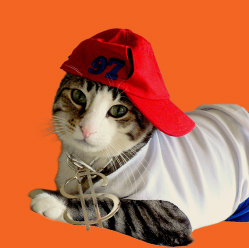

Get Some Serious Cat-titude
Kat's Costume Shop is your one stop shop to finding the best of the best cat costumes and apparel. We offer a wide variety of hats, sweaters, shirts, masks, sunglasses, onesies, capes, socks and booties. Custom orders are available upon request. Just stop by the store or call and ask for Mavis.
About Kat
Kat is the ultimate cat lady you've always dreamed you could be. Never has a Halloween gone by where her twelve cats weren't all dressed to impress. Five years ago, she decided to open Kat's Costume Shop to share her passion with the world.
About Mavis
Mavis has been designing custom clothes for her three cats since she was fifteen years old. She loves working on custom orders. Her cats are often roaming freely throughout the store and modeling the latest trends.



Get In Touch
Business Hours
MONDAY-FRIDAY 11am - 8pm
SATURDAY 11am - 4pm
SUNDAY 12pm - 4pm
Contact Info
PHONE
(123) 456-7890